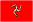
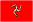

| Circuit | Date | Winner | |
|  | Isle of Man | T.Provini (MV Augusta) | |
| Hockenheim | C.Ubbiali (MV Augusta) | ||
| Assen | C.Ubbiali (MV Augusta) | ||
| Spa Francorchamps | C.Ubbiali (MV Augusta) | ||
| Kristianstad | T.Provini (MV Augusta) | ||
| Dundrod | M.Hailwood (Ducati) | ||
| Monza | E.Degner (MZ) |
FIM WORLD MOTORCYCLE CHAMPIONSHIP
125cc Series
1959 Season
| Circuit | Date | Winner | |
|  | Isle of Man | T.Provini (MV Augusta) | |
| Hockenheim | C.Ubbiali (MV Augusta) | ||
| Assen | C.Ubbiali (MV Augusta) | ||
| Spa Francorchamps | C.Ubbiali (MV Augusta) | ||
| Kristianstad | T.Provini (MV Augusta) | ||
| Dundrod | M.Hailwood (Ducati) | ||
| Monza | E.Degner (MZ) |